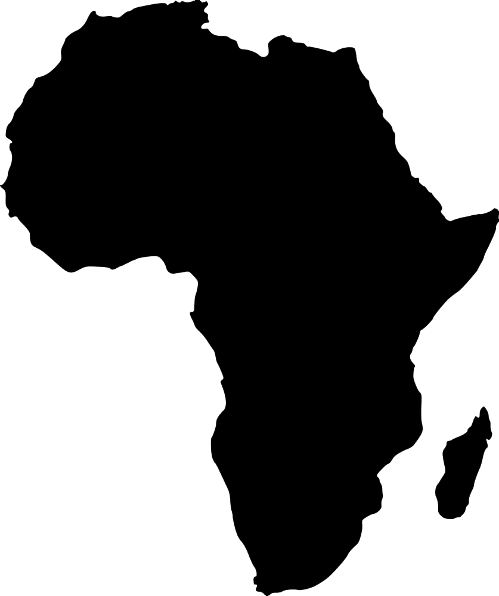
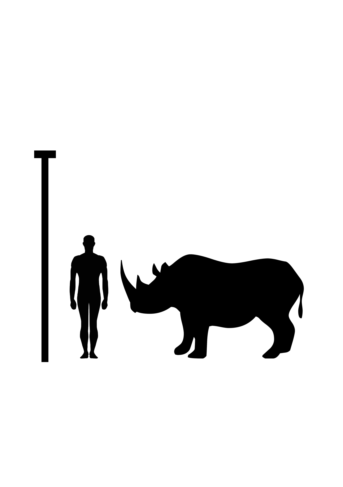

Did you know?
Black Rhinoceros is a species of rhino found in Africa. They are heavy animals with a body mass of up to 1,400kg! Despite being so heavy they run on their toes. They are now a critically endangered species. This is mainly due to poaching as there is a demand for rhino horns, mainly as in some areas of Asia they are used in folk medicine. Since becoming officially endangered in 2011, there are less than 5,500 Black Rhinos in the world today. Black Rhinos are the smaller of the two african rhinos species, they have two horns and occasionally a small posterior horn. They live in a variety of places including open plains, sparse thorn scrubs, savannas, thickets and dry forests. Rhinos are one of the oldest groups of mammals, virtually living fossils. They play a central part in their habitats and in countries like Namibia, they are a huge source of income from ecotourism.
 